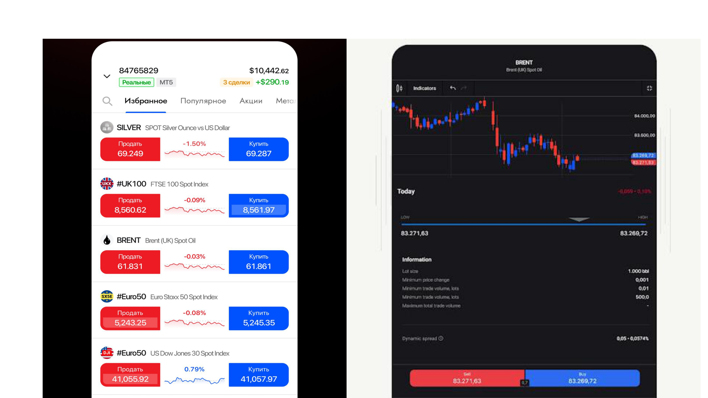
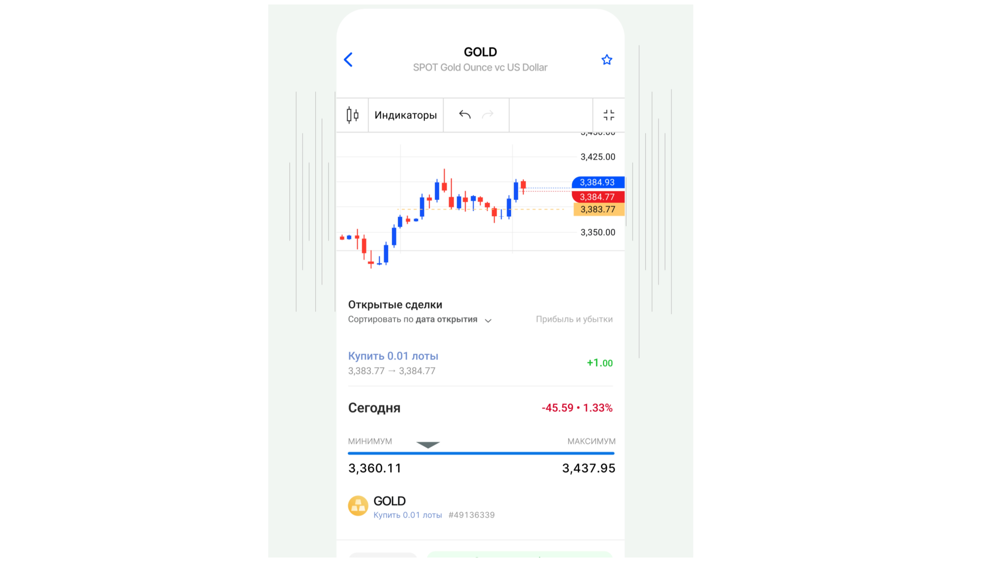
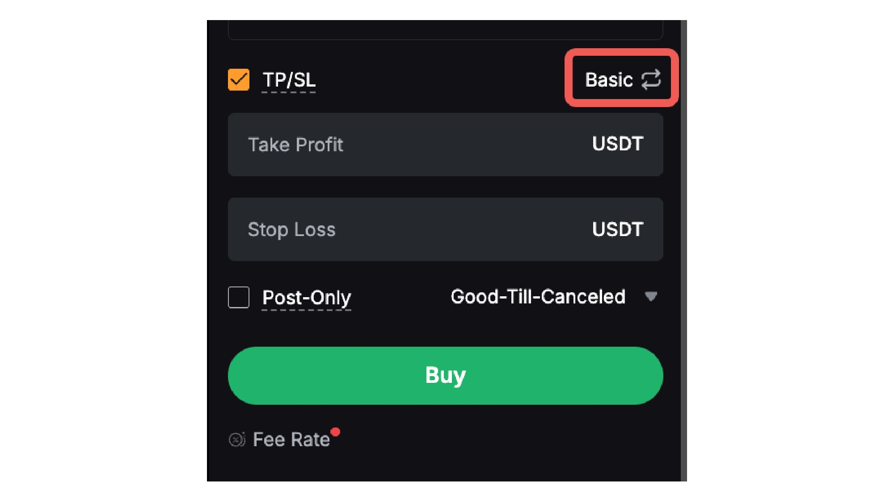

Что такое FxPro
FxPro — это международный форекс-брокер, который работает с 2006 года. Он предоставляет доступ к торговле валютами, акциями, индексами, металлами и криптовалютами через популярные платформы: MetaTrader 4 (MT4), MetaTrader 5 (MT5), cTrader и собственное приложение FxPro.
Как устроена торговля на бирже
Когда вы торгуете на бирже, вы не покупаете реальный актив (например, тонну золота или 100 000 евро). Вы торгуете контрактами на разницу (CFD) — то есть ставками на изменение цены актива.
Это значит:
- Вы можете зарабатывать как на росте цены, так и на её падении.
- Для входа нужен только депозит (залог), а не вся стоимость актива.
- Брокер даёт кредитное плечо — сумму, во много раз превышающую ваш депозит.
Что такое лонг
Лонг (Long) — это ставка на рост цены. Это классическая покупка: купил дешевле — продал дороже.
Как это работает:
- Вы считаете, что цена пойдёт вверх.
- Открываете сделку на покупку (Buy).
- Если цена выросла — закрываете сделку и получаете прибыль.
- Если цена упала — получаете убыток.
Пример:
- Цена золота: $2000.
- Вы открываете лонг (Buy) на 1 лот.
- Цена выросла до $2010.
- Вы закрываете сделку — прибыль $10 за каждый пункт.
Что такое шорт
Шорт (Short) — это ставка на падение цены. Здесь вы сначала «продаёте» актив, которого у вас нет, а потом «выкупаете» его дешевле. Разница — ваша прибыль.
Как это работает:
- Вы считаете, что цена пойдёт вниз.
- Открываете сделку на продажу (Sell).
- Если цена упала — закрываете сделку и получаете прибыль.
- Если цена выросла — получаете убыток.
Пример:
- Цена золота: $2000.
- Вы открываете шорт (Sell) на 1 лот.
- Цена упала до $1990.
- Вы закрываете сделку — прибыль $10 за каждый пункт.
Шорт — как взять товар в долг у друга, продать его, дождаться падения цены, купить дешевле и вернуть долг. Разница — ваша прибыль.
Как открыть сделку
Пошагово (на примере FxPro):
- Откройте терминал и выберите инструмент (например, XAUUSD).
- Нажмите «Новый ордер» (New Order).
- Выберите тип: Buy — для лонга, Sell — для шорта.
- Укажите объём (лот). 0.01 лот — минимальный для новичка.
- Установите Stop Loss (SL) — где вы готовы закрыть сделку с убытком.
- Установите Take Profit (TP) — где вы закроете сделку с прибылью.
- Нажмите «Купить» или «Продать» — сделка откроется.



Как закрыть сделку
Сделку можно закрыть двумя способами:
- Вручную — нажать «Закрыть» в терминале в нужный момент.
- Автоматически — сработает Stop Loss или Take Profit.
Что такое своп и комиссия
За перенос сделки через ночь брокер начисляет или списывает своп. Он может быть положительным (вам платят) или отрицательным (вы платите). Также есть спред — разница между ценой покупки и продажи, — это основная «комиссия» брокера.
Что важно уяснить из урока
- FxPro — брокер для торговли CFD на разных рынках.
- Лонг — ставка на рост цены (Buy).
- Шорт — ставка на падение цены (Sell).
- Для входа нужен депозит и кредитное плечо.
- Всегда ставьте стоп-лосс.
- Начинайте с демо-счёта и минимального лота.